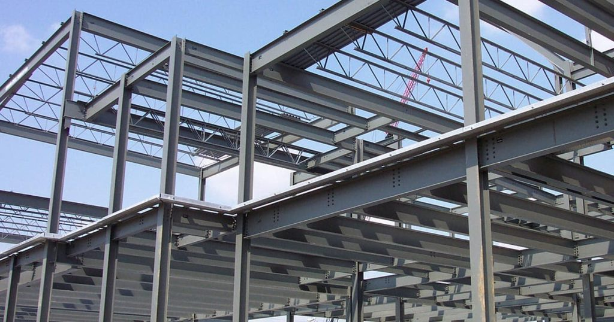
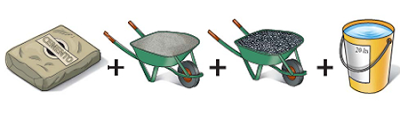

5. MATERIALES Y ESTRUCTURAS
Materiales tradicionales en la construcción
A lo largo de la historia, los seres humanos han utilizado diversos materiales para construir estructuras, desde los más básicos hasta los más sofisticados:
- Piedra: Granito, mármol, caliza
- Madera: Roble, pino, cedro
- Barro y arcilla: Adobe, ladrillo cocido
- Metal: Hierro, bronce, acero
- Materiales modernos: Hormigón, plásticos, materiales compuestos
Materiales principales para construir estructuras: el acero y el hormigón
Hay muchos materiales que nos sirven para construir estructuras, desde el plástico para los objetos pequeños, hasta el acero y el hormigón para los grandes edificios.
A continuación estudiaremos con algo más de detalle estos dos últimos materiales, que debido a su gran resistencia, se utilizan mayoritariamente en las estructuras que deben soportar cargas pesadas.
El Acero
La mayoría de los metales que usamos son aleaciones, mezclas de metales entre sí o con otras sustancias. Por ejemplo, el acero es una aleación en la que el componente principal es el hierro.

Características del acero:
- Composición: Aleación de hierro con carbono
- Resistencia: Muy alta tanto a tracción como a compresión
- Versatilidad: Se puede moldear en vigas y perfiles de muchos tipos
- Durabilidad: Material inoxidable (a diferencia del hierro puro)
Aplicaciones del acero:
- Construcción de edificios, puentes, torres y barcos
- Fabricación de cubiertos y objetos en contacto con agua
- Perfiles estructurales (vigas en I, columnas, cerchas)
- Refuerzo del hormigón (hormigón armado)
El Hormigón
El hormigón es uno de los materiales más importantes en la construcción de edificios, puentes, torres, presas y otras grandes obras.

Composición del hormigón:

- Cemento: Aglutinante que une todos los componentes
- Arena: Agregado fino que rellena espacios
- Grava: Piedras pequeñas que dan resistencia
- Agua: Activa la reacción química del cemento
Características del hormigón:
- Resistencia a compresión: Excelente
- Resistencia a tracción: Limitada (punto débil del material)
- Moldeabilidad: Se puede dar cualquier forma mientras está fresco
- Durabilidad: Muy larga vida útil
El Hormigón Armado: La solución perfecta
Para superar la limitación del hormigón en tracción, se desarrolló el hormigón armado:
¿Qué es? Hormigón al que se han añadido largas varillas de acero antes de que endurezca.

Ventajas del hormigón armado:
- El hormigón soporta muy bien la compresión
- El acero soporta muy bien la tracción
- Juntos forman un material completo y resistente
- Se utiliza especialmente para hacer pilares que ganan resistencia
Funcionamiento:
- Se colocan las varillas de acero en el molde
- Se vierte el hormigón líquido alrededor del acero
- Al fraguar, ambos materiales trabajan unidos
- El resultado es una estructura híbrida muy resistente
Comparación de materiales estructurales
| Material | Resistencia a compresión | Resistencia a tracción | Peso | Coste | Aplicaciones principales |
|---|---|---|---|---|---|
| Hormigón | ⭐⭐⭐⭐⭐ | ⭐⭐ | Alto | Bajo | Cimientos, pilares, presas |
| Acero | ⭐⭐⭐⭐ | ⭐⭐⭐⭐⭐ | Medio | Alto | Vigas, estructuras trianguladas |
| Hormigón armado | ⭐⭐⭐⭐⭐ | ⭐⭐⭐⭐ | Alto | Medio | Edificios, puentes, túneles |
| Madera | ⭐⭐⭐ | ⭐⭐⭐ | Bajo | Medio | Casas, estructuras ligeras |
| Piedra | ⭐⭐⭐⭐⭐ | ⭐⭐ | Muy alto | Variable | Estructuras masivas históricas |
¿Por qué es importante conocer los materiales?
Entender las propiedades de los materiales te ayuda a:
- Elegir el material adecuado para cada aplicación
- Comprender por qué las estructuras se construyen de determinada manera
- Apreciar la evolución de la construcción a lo largo de la historia
- Diseñar estructuras más eficientes y seguras
Curiosidades sobre materiales estructurales
¿Sabías que...?
- El hormigón romano (hace 2000 años) era tan bueno que muchas estructuras siguen en pie
- La Torre Eiffel pesa 6.300 toneladas pero si fuera de piedra pesaría más de 200.000 toneladas
- El acero puede reciclarse infinitas veces sin perder sus propiedades
- El hormigón es el segundo material más consumido en el mundo después del agua
¡La elección correcta del material es fundamental para que una estructura sea resistente, duradera y económica!